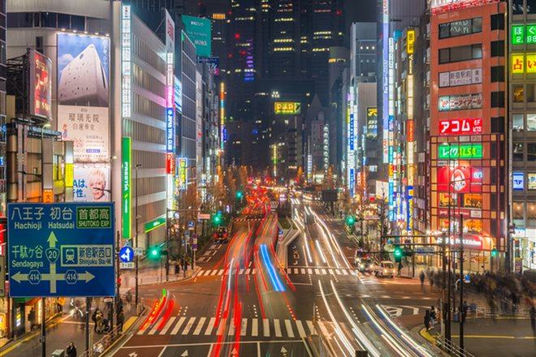
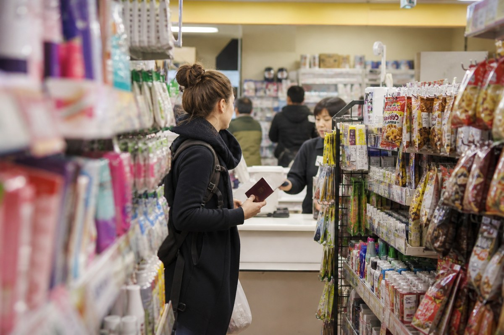

가이드투어 5%
가이드투어 5%
도쿄 · 인디고트래블
도쿄 후지산 1일 버스투어 (한국인 가이드·DSLR 촬영)
한국어 가이드무료 취소
예약 성사율 89% · 네이버 여행 기준
- 10시간 30분
- 예약 후 안내
- 입장료 별도
- 현장 추가금
7일 전까지 무료 취소
5%65,550원69,000원/ 1인
도쿄는 후지산 당일 버스투어(1인 65,550원)를 하루 넣고 나머지 이틀을 시내에 쓰는 일정이 무난합니다. 시내호텔 3연박에 하루 자유일정을 붙인 3박 4일 패키지가 80만 6,550원, 디즈니를 넣은 2박 3일이 96만 9,030원(부산 출발)입니다. 아침은 츠키지에서 950엔 오야코동, 점심은 신주쿠 츠케멘 1,000엔, 저녁은 시부야 스시 3,800엔으로 묶으면 하루 세 끼가 5,750엔이고, 나리타에서 우에노까지는 1,060엔대 열차로 들어옵니다.

네이버 여행에서 지금 판매 중인 상품입니다. 표시 가격은 1인 기준 최저가이고, 미팅 장소·입장료 포함 여부·현장 추가금·취소 마감일을 카드에 그대로 적었습니다.
가이드투어 5%
도쿄 · 인디고트래블
예약 성사율 89% · 네이버 여행 기준
7일 전까지 무료 취소
도쿄 · 노랑풍선
예약 성사율 96% · 네이버 여행 기준
30일 전까지 무료 취소

2박 3일도쿄 · 모두투어
예약 성사율 85% · 네이버 여행 기준
30일 전까지 전액 환불
 한국어 가이드
한국어 가이드
도쿄 · 트립닷컴
4.8 · 리뷰 6 · 트립닷컴 기준
1일 전 10:00까지 무료 취소
| 상품 | 가격(1인) | 소요·가이드 | 미팅·시각 | 포함 사항 | 현장 추가금 | 최소/최대 인원 | 취소 규정 |
|---|---|---|---|---|---|---|---|
| 도쿄 후지산 1일 버스투어 (한국인 가이드·DSLR 촬영)인디고트래블 · 가이드투어 | 69,000원65,550원 5% 할인가 | 10:30 한국어 |
예약 확정 후 집결 장소·시간을 카카오톡으로 안내 오전 출발 · 시간은 확정 안내 |
차량 제반 비용, 인디고트래블 소속 한국인 정규 가이드 | ⚠ 입장료 별도 외 1건 | 상세페이지 확인 필요 | 투어일 7일 전까지 취소·변경 가능 · 6일 전부터 환불 불가 |
| 인천 출발 도쿄 4일 (시내호텔 3연박·1일 자유 or 하코네)노랑풍선 · 세미패키지 | 849,000원806,550원 5% 할인가 | 3박 4일 한국어 |
인천국제공항 출발 항공 스케줄에 따라 상이 |
시내 일급호텔 3박, 왕복항공·유류·TAX, 일정표상 식사·입장료, 동행가이드 | ⚠ 선택 관광·개인 경비 | 상세페이지 확인 필요 | 30일 전까지 무료 취소 · 29일 전 10% · 19일 전 15% · 9일 전 20% · 7일 전 30% · 당일 50% |
| 부산 출발 도쿄 3일 (도쿄 베스트·1일 자유 or 디즈니)모두투어 · 세미패키지 | 999,000원969,030원 3% 할인가 | 2박 3일 한국어 |
김해국제공항 출발 항공 스케줄에 따라 상이 |
김해공항세·현지공항세, 1억원 해외여행자 보험, 시내호텔 2박, 일정표상 관광 | ⚠ 디즈니 입장권(선택) | 상세페이지 확인 필요 | 30일 전까지 전액 환불 · 20일 전 10% · 10일 전 15% · 8일 전 20% · 1일 전 30% · 당일 50% |
| 도쿄 출발 가마쿠라·에노시마 일일투어 (에노덴 전차·시치리가하마·고토쿠인·한국인 가이드)트립닷컴 · 가이드투어 | 61,019원 정가 판매 | 12:00 한국어 |
07:00 도쿄역 마루노우치 광장 / 07:30 신주쿠 Starbucks Coffee - Shinjuku L Tower 앞 07:00·07:30 두 곳 집결 · 19:00 종료 |
왕복 버스, 한국어 투어 가이드, 에노덴 전차 티켓, 고토쿠인 주요 어트랙션 티켓, 어린이 안전시트 | ⚠ 고토쿠인·하세데라 입장료(선택) | 1명 / 최대 49명 | 사용일 1일 전 10:00까지 무료 취소 · 이후 100% 수수료 |
표는 좌우로 넘길 수 있습니다. ‘상세페이지 확인 필요’는 판매 페이지에 값이 표기되지 않은 항목입니다.
투어·패키지 링크는 네이버 여행 커넥트 제휴 링크입니다. 예약이 이루어지면 판매자로부터 수수료를 받지만, 결제 금액은 같습니다.
츠키지 장외시장은 오전 6시 반부터 13시 반까지가 진짜 승부처입니다. 아침을 츠키지에서 먹고, 점심은 신주쿠 츠케멘, 저녁은 시부야 스시로 이어지는 하루가 이동이 가장 적습니다.
자리에 앉아서 식권기를 쓰는 방식. 면은 보통·대를 고를 수 있고, 먹고 난 뒤 스프割り를 부탁하면 됩니다.
예약 불가 · 현금·교통카드낮 평균 예산은 2,500엔. 오마카세-극-은 6,000엔이고, 17시 이후는 예약을 받습니다.
시장 휴시일(수·일·공휴일 다수)에는 장외도 한산합니다닭백탕 스프로 만든 계란물이 포인트. 특상 오야코동·시오 오야코동·모쓰 오야코동도 있습니다.
13:30에 문을 닫습니다 · 늦으면 헛걸음밥이 떨어지면 그날 영업이 끝납니다. 12시 전에 가는 게 안전하고, 소고기동·니쿠도후도 같이 팝니다.
현금만 · 앉을 자리 없음마크시티 이스트 4층. 정리권은 매장 반경 1km 안에서만 뽑히니 시부야에 도착한 뒤 발권하세요.
2시간 이내 식사 협조 · 예약은 좌석만 별도2026년 11월 20일 확인. 모든 가게는 구글 지도에서 실제 영업 중(OPERATIONAL)임을 확인했고, 메뉴 가격은 공식 메뉴판·카카오맵 메뉴 정보 또는 2026년 9~11월 방문 기록이 일치하는 값만 실었습니다. 제주 5곳의 원화 가격은 환산 없이 그대로 적었습니다. v24(2026-11-20): 서울·부산·강릉·여수·경주 20곳과 나트랑 4곳을 같은 기준(구글 지도 영업 상태 OPERATIONAL, 공식 메뉴판·등록 메뉴 2곳 이상 일치)으로 추가했습니다. v26(2026-11-20): 속초·양양·전주·통영·인천(영종도) 16곳을 같은 기준(구글 지도 OPERATIONAL, 네이버 플레이스·식신·다이닝코드 등록 메뉴 2곳 이상 일치, 2026년 10~11월 방문 기록)으로 추가했습니다.
돈키호테와 드럭스토어, 공항 면세점 세 곳이면 끝납니다. 다만 2026년 11월 1일 구매분부터 면세가 '매장에서 바로 빼주는' 방식이 아니라 출국할 때 공항에서 돌려받는 리펀드 방식으로 바뀌었습니다. 계산은 세금 포함으로 하고, 수하물 위탁 전에 세관 키오스크에서 여권을 찍어야 환급됩니다.
정가가 12개입 1,036엔으로 올랐습니다. 24개입(2,073엔)도 개당 86.4엔으로 12개입과 같은 단가입니다.
초콜릿이라 25도 이상에서 녹습니다면세점 800엔, 시내 매장 864엔. 냉장 제품이라 마지막 날 사서 아이스팩과 함께.
냉장 보관 · 여름엔 보냉 필수78매는 큰 원형, 156매는 작은 기본형. 부모님 선물 1순위인데 156매는 1,000엔 안팎입니다.
의약외품 · 자가사용 범위돈키호테 698~848엔, 마쓰모토 980엔. 국내 올리브영 12,900원보다 40%가량 쌉니다.
시트형 · 기내 반입 가능2식 740엔(개당 370엔), 5식 1,998엔(개당 400엔). 개당은 2식이 싸고, 나눠 줄 땐 5식이 낫습니다.
액상 스프 · 위탁 수하물 권장한국 주류 면세는 병 수 제한 없이 합계 2L·400달러 이하입니다. 720ml 두 병이 딱 1.44L.
주류 · 위탁 수하물트립닷컴에서 직접 예약하는 숙소·항공권과, 현지에서 쓸 입장권·공항픽업·eSIM·공항철도입니다. 체크인 날짜와 방문일을 넣으면 그날 요금으로 열리고, 예약·결제는 트립닷컴에서 그대로 이루어집니다.
이 포스팅은 클룩(Klook) 어필리에이트 활동의 일환으로, 예약이 이루어지면 일정액의 수수료를 제공받습니다. 예약·결제는 클룩에서 그대로 이루어지며, 트립픽은 가격에 아무것도 더하지 않습니다.
이 포스팅은 트립닷컴 파트너스 활동의 일환으로, 예약이 이루어지면 일정액의 수수료를 제공받습니다. 숙소·항공권 가격과 예약 조건은 트립닷컴에서 그대로 결제되며, 수수료 때문에 가격이 올라가지 않습니다.
1일 300~590원권을 날짜별로 끊는 쪽과 3일 완전무제한 14,620원 두 갈래입니다. 2인 여행이면 인원수만큼 사야 하고, 설치 QR은 출발 전에 받아 두세요.
eSIM 카드는 네이버 쇼핑 커넥트 제휴 링크입니다. 이 포스팅은 네이버 쇼핑 커넥트 활동의 일환으로, 구매 발생 시 수수료를 제공받습니다. 결제 금액은 같습니다.
같은 도시의 교통패스 본전, 공항에서 시내까지 실제 요금, 패키지 실지출을 숫자로 계산한 글입니다.

eSIM을 설치했는데 인터넷이 안 되는 원인은 대부분 세 가지입니다. 아이폰·갤럭시 설정 경로, 원인 7가지, 통화비 폭탄 막는 설정, 로밍 9,900원과 eSIM 590원의 차이를 정리했습니다.

세븐·로손·패밀리마트의 2026년 11월 가격과 600엔 이하 조합 3가지, 포장 8%·매장 10% 세금, 카카오페이·네이버페이·트래블카드·현금 결제법을 한 장에 정리했습니다.

오사카·도쿄·후쿠오카·방콕·다낭·타이베이 6개 공항에서 시내까지 실제 요금과 막차를 한 표에 놓았습니다. 23시 이후 도착하면 남는 선택지와 2인 비용까지 계산했습니다.
츠키지 장외시장 아침 6시 반부터 신주쿠 츠케멘, 시부야 스시까지. 13:30에 닫는 가게와 10시에 대기표를 뿌리는 가게를 시간표로 묶었습니다.

같은 ‘후지산 당일투어’인데 48,800원부터 200,000원대까지 있습니다. 가격 차이를 만드는 건 명소 수가 아니라 이동 시간과 귀환 시각입니다. 직접 가는 경우의 버스·열차 요금도 함께 계산했습니다.
24시간 800엔·48시간 1,200엔·72시간 1,500엔. 첫 개찰 시각부터 시간이 도는 구조, JR·버스가 안 되는 함정, 나리타에서 시내까지 교통까지 한 표에 정리했습니다.

나리타에서 우에노까지 1,060엔, 신주쿠까지 3,600엔. 스카이라이너·N'EX·게이세이 본선·리무진버스를 2인 왕복 총액으로 놓고, 하네다는 숙소 동네별로 정답을 갈랐습니다.
1박이 적은 상품이 16만 2,480원 더 비쌉니다. 김해 출발 노선의 공급 때문인데, 후지산 투어·스카이라이너·메트로 패스를 더한 1인 실지출까지 계산했습니다.

2026년 11월 1일부터 일본 면세가 리펀드 방식으로 바뀌었습니다. 세금 포함으로 결제하고 출국할 때 세관 키오스크에서 돌려받는 절차, 그리고 시로이코이비토·로이스·휴족시간·동전파스·이치란의 2026년 11월 정가와 구매처를 정리했습니다.
4일 2인 기준으로 세 방식의 총액을 계산했습니다. 매일 500MB 제한형과 완전 무제한형이 언제 갈리는지, 테더링이 필요한 순간, 도착 전에 설치해야 하는 이유까지 정리했습니다.

2026년 11월 1일부터 일본 면세는 리펀드 방식입니다. 돈키호테·드럭스토어에서 여권을 언제 보여주고, 세전 5,000엔(세금 포함 5,500엔)을 어떻게 채우며, 공항에서 짐을 부치기 전에 키오스크를 찍는 순서를 정리했습니다.